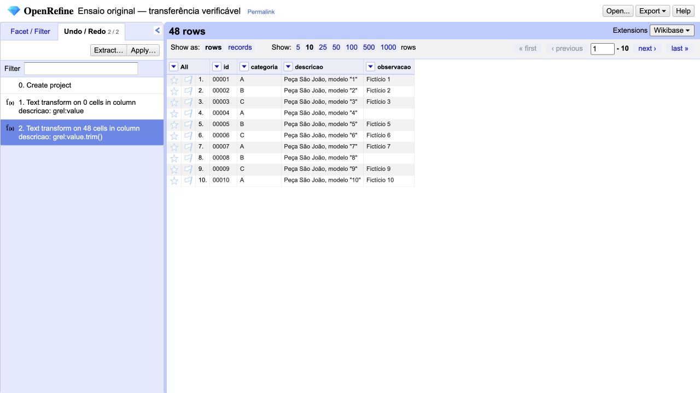

AJUDA INDEPENDENTE · OPENREFINE 3.10.0
Entregue os dados.
Conserve a recuperação.
CSV e backup de projeto têm funções diferentes. Este procedimento foi conferido com arquivos reais de uma amostra fictícia; a recuperação foi reproduzida pela API em outro workspace.
Não é documentação oficial nem execução para cliente. A importação inicial ocorreu na interface; transformação efetiva, exportação e recuperação ocorreram pela API local do próprio OpenRefine. Abra as instruções completas, incluindo o método técnico e seus limites.
Escolher a entregaUm arquivo para cada necessidade
- Um recorte dos dados
- CSV da categoria A: 16 registros. O filtro muda a exportação.
- Todos os dados tratados
- CSV completo: 48 registros. IDs permanecem texto, como 00001.
- Continuar o projeto e desfazer
- Arquivo de projeto: dados e histórico. Não promete guardar a seleção de filtros ou a visualização.
O backup pode conter valores antigos. Compartilhar o resultado tratado não autoriza compartilhar todo o histórico. Aqui todos os registros são próprios e fictícios.
Conferir antes de entregarA caixa de texto não é o resultado
Na execução, a primeira tentativa pela interface aplicou value em zero células. A operação efetiva seguinte aplicou value.trim() em 48 células. O histórico preserva as duas; a falha não foi apagada para aparentar sucesso.

Verifique a expressão no histórico e compare os arquivos. A aparência da tabela não revela todos os espaços, caracteres ou perdas de dados.
Transferir e recuperarO backup precisa abrir em outro ambiente
- Importe o arquivo de projeto em outro workspace vazio. Não o abra como CSV.
- Exporte o resultado sem filtros e confronte todas as células com o CSV completo.
- Volte ao estado inicial no histórico. Confira as células e confronte com a fonte fictícia original.
- O CSV desta versão removeu espaços externos mesmo após desfazer. Ele não confirmou o backup fiel; a conferência das células recuperadas precisa ser separada. O teste completo original ficou reprovado.
- Na API, uma resposta
pending exige acompanhar o processo e conferir o histórico; não é confirmação de recuperação.
Comparador original desta amostra · Guia técnico completo
O verificador é específico destas 48 linhas. Ele não representa uma nova ferramenta empresarial ou uma garantia para arquivos de terceiros.
Entrega revisadaO que a revisão encontrou
O primeiro guia não explicava o processamento assíncrono e não ligava os nomes dos arquivos aos downloads. A reprodução independente parou. As instruções e os links foram corrigidos. Uma segunda execução identificou perda de espaços externos no CSV e retiramos a promessa de recuperação fiel por esse formato. As versões e os resultados que falharam foram preservados.
Isso demonstra uma correção pontual da documentação. Não demonstra manutenção contínua, economia contra o manual oficial, redução de chamados, cliente ou aceite externo. O ensaio anterior com Excalidraw continua parcial.
Descrever um procedimento público